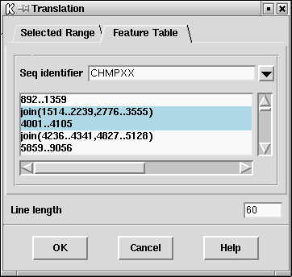
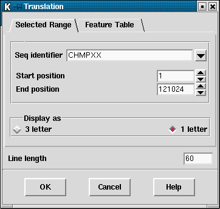

Translations of the sequence can be obtained in three ways. The first is an option available within the "Sequence manager" or the "Sequences" menu ( see section Sequence manager).
The second is an option in the Sequence display ( see section Sequence display) which enables the translation to be shown with the scrolling sequence.
The third, which has two methods of defining the segments to translate, is described here. The translations are written to the Output window, from where they can be saved to disk. A segment of a typical display is shown below.

Users select either to use a feature table to define the segments to translate or can simply enter a start and end position. In the latter case a six phase transtation over that one segment is written out. If a feature table is used (and this assumes the sequence file was an EMBL entry complete with features), the CDS records from the table will be listed in the dialogue window and the user can select which ones should be used (see section Use of feature tables in spin). The translations produced will be written in FASTA format ready to be saved to disk (which the next release of spin will do automatically!).
The user can also choose the line length, and whether one or three letter amino acid symbols are produced.
